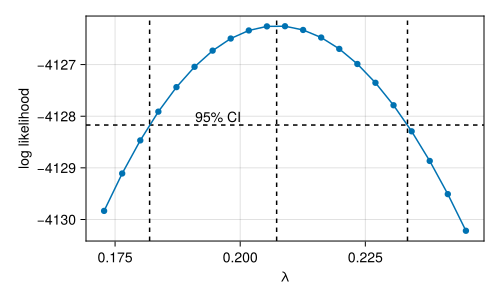

using BoxCox
using CairoMakie
using Random
CairoMakie.activate!(; type="svg")
x = abs2.(randn(MersenneTwister(42), 1000))
let f = Figure()
ax = Axis(f[1,1]; xlabel="x", ylabel="density")
density!(ax, x)
ax = Axis(f[1,2]; xlabel="theoretical quantiles", ylabel="observed values")
qqnorm!(ax, x)
colsize!(f.layout, 1, Aspect(1, 1.0))
colsize!(f.layout, 2, Aspect(1, 1.0))
resize_to_layout!(f)
f
endBoxCox.jl
A lightweight package with nice extensions
The Box-Cox Transformation
Box & Cox (1964)
\[ \begin{cases} \frac{x^{\lambda} - 1}{\lambda} &\quad \lambda \neq 0 \\ \log x &\quad \lambda = 0 \end{cases} \]
The denominator serves to normalize the transformation and preserve the original direction of the effect (the sign is flipped when \(\lambda < 0\)). In application, we may only care about the numerator (e.g. when it suggests using “speed” instead of “time”.)
Example: Square of a Normal Distribution
Fitting the transformation
bc = fit(BoxCoxTransformation, x)Box-Cox transformation
estimated λ: 0.2073
resultant transformation:
y^0.2 - 1
-----------
0.2Examining the fitted transformation
Makie extension
If an appropriate Makie backend is loaded, then you can also do diagnostic plots.
let f = Figure(; size=(500, 300))
ax = Axis(f[1,1])
boxcoxplot!(ax, bc;
conf_level=0.95)
f
end
Applying the fitted transformation
bc.(x)'1×1000 adjoint(::Vector{Float64}) with eltype Float64:
-1.04197 -1.37758 -3.74249 -1.89776 … -3.3449 -0.295085 -1.06768let f = Figure(; size=(800, 300)), bcx = bc.(x)
ax = Axis(f[1,1]; xlabel="x", ylabel="density")
density!(ax, bcx)
ax = Axis(f[1,2]; xlabel="theoretical quantiles", ylabel="observed values")
qqnorm!(ax, bcx; qqline=:fitrobust)
colsize!(f.layout, 1, Aspect(1, 1.0))
colsize!(f.layout, 2, Aspect(1, 1.0))
resize_to_layout!(f)
f
endConditional Distributions: transforming the response of a regression model
Example: Tree Growth
using DataFrames
using RDatasets: dataset as rdataset
trees = rdataset("datasets", "trees")describe(trees)3×7 DataFrame
| Row | variable | mean | min | median | max | nmissing | eltype |
|---|---|---|---|---|---|---|---|
| Symbol | Float64 | Real | Float64 | Real | Int64 | DataType | |
| 1 | Girth | 13.2484 | 8.3 | 12.9 | 20.6 | 0 | Float64 |
| 2 | Height | 76.0 | 63 | 76.0 | 87 | 0 | Int64 |
| 3 | Volume | 30.171 | 10.2 | 24.2 | 77.0 | 0 | Float64 |
Linear Regression
y = trees[!, :Volume]
X = hcat(ones(length(y)),
log.(trees[!, :Height]),
log.(trees[!, :Girth]))
bc_tree = fit(BoxCoxTransformation, X, y)Box-Cox transformation
estimated λ: -0.0673
resultant transformation:
y^-0.1 - 1
------------
-0.1let f = Figure(; size=(400, 300))
boxcoxplot!(Axis(f[1,1]), bc_tree; conf_level=0.95)
f
end
Diagnostics matter!
\(\lambda=0\) is well within the 95% CI and log fits in well with the rest of the model.
Linear Regression
using StatsModels
fit(BoxCoxTransformation,
@formula(Volume ~ 1 +
log(Height) +
log(Girth)),
trees)Box-Cox transformation
estimated λ: -0.0673
resultant transformation:
y^-0.1 - 1
------------
-0.1
StatsModels extension
If StatsModels.jl is loaded (even indirectly via e.g. GLM.jl), then you can also use the @formula macro to specify the regression model.
This also works for mixed models!
Reaction time in the sleep study
using MixedModels
model = fit(MixedModel,
@formula(reaction ~ 1 + days + (1 + days | subj)),
dataset(:sleepstudy))| Est. | SE | z | p | σ_subj | |
| (Intercept) | 251.4051 | 6.6323 | 37.91 | <1e-99 | 23.7805 |
| days | 10.4673 | 1.5022 | 6.97 | <1e-11 | 5.7168 |
| Residual | 25.5918 |
Fitting the transformation
bc_mixed = fit(BoxCoxTransformation,
model)Box-Cox transformation
estimated λ: -1.0747
resultant transformation:
y^-1.1 - 1
------------
-1.1let f = Figure(; size=(400, 300))
boxcoxplot!(Axis(f[1,1]), bc_mixed; conf_level=0.95)
f
end
Diagnostics matter!
\(\text{time}^{-1}\) has a natural interpretation as speed and -1 is nearly as good as the “optimal” transformation. We thus use our domain expertise and use speed (as responses per second) instead of the fitted result.
Speed in the sleep study
model_bc = fit(MixedModel,
@formula(1000 / reaction ~ 1 + days + (1 + days | subj)),
dataset(:sleepstudy))| Est. | SE | z | p | σ_subj | |
| (Intercept) | 3.9658 | 0.1056 | 37.55 | <1e-99 | 0.4190 |
| days | -0.1110 | 0.0151 | -7.37 | <1e-12 | 0.0566 |
| Residual | 0.2698 |
Note
We use 1000 in the numerator to scale things back to seconds from milliseconds.
References
Box, G. E. P., & Cox, D. R. (1964). An Analysis of Transformations. Journal of the Royal Statistical Society: Series B (Methodological), 26(2), 211–243. https://doi.org/10.1111/j.2517-6161.1964.tb00553.x
Meyer, H. A. (1953). Forest mensuration. Penns Valley Publishers.
R Core Team. (2024). R: A language and environment for statistical computing. R Foundation for Statistical Computing. https://www.R-project.org/
Version Info
Julia Version 1.10.4
Commit 48d4fd48430 (2024-06-04 10:41 UTC)
Build Info:
Official https://julialang.org/ release
Platform Info:
OS: macOS (arm64-apple-darwin22.4.0)
CPU: 8 × Apple M1
WORD_SIZE: 64
LIBM: libopenlibm
LLVM: libLLVM-15.0.7 (ORCJIT, apple-m1)
Threads: 4 default, 0 interactive, 2 GC (on 4 virtual cores)
Environment:
JULIA_LOAD_PATH = @:@stdlibThis page was rendered from git revision d43be17 .